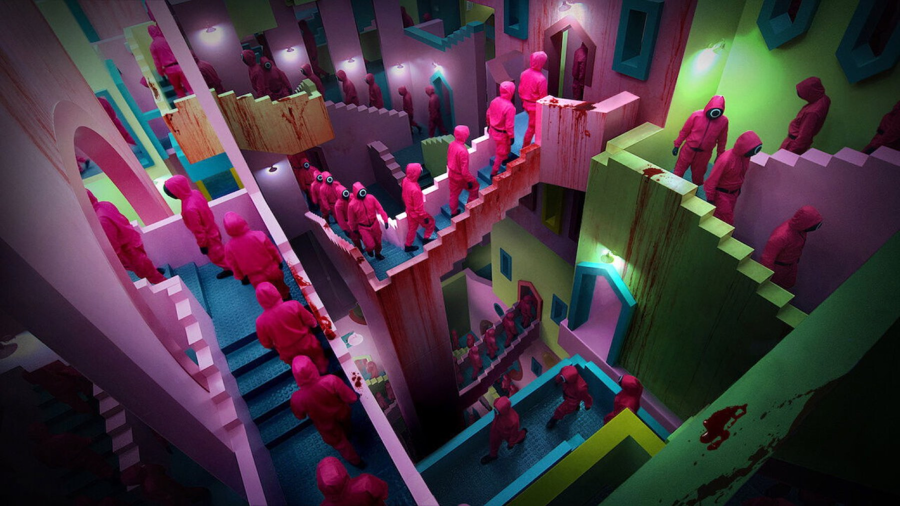
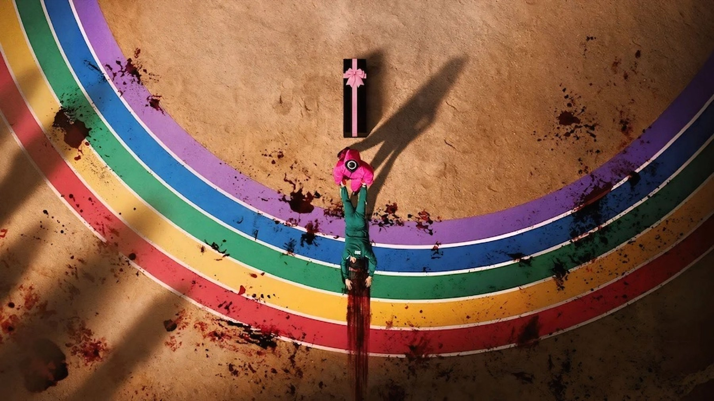
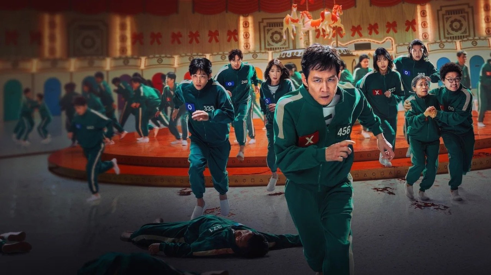

Squid Game – Stagione 3
Sei episodi per chiudere il fenomeno coreano di Netflix: un finale cupo, coraggioso e potente, che però corre troppo
Il gioco è finito. Il 27 giugno 2025 Netflix ha pubblicato in un colpo solo i sei episodi della terza e ultima stagione di Squid Game, chiudendo la storia che nel 2021 aveva travolto il mondo intero. Una storia che il suo creatore, Hwang Dong-hyuk, aveva immaginato come un unico blocco con la seconda stagione e che solo in un secondo momento è stata divisa in due.
Siamo arrivati in fondo, e il bilancio è più complicato del previsto. Squid Game 3 contiene alcune delle sequenze più potenti dell'intera serie e un'idea di finale coraggiosa, ma arriva alla conclusione con il fiato corto. Un epilogo che fa male, nel senso buono e in quello meno buono.
Di cosa parla la terza stagione di Squid Game?
Senza spoiler: la stagione riparte esattamente da dove si era interrotta la seconda, uscita il 26 dicembre 2024. Seong Gi-hun, il giocatore 456 interpretato da Lee Jung-jae, è tornato nell'arena per distruggere il sistema dall'interno, ma il suo piano è andato in pezzi. Ora deve affrontare i giochi più spietati di sempre, insieme ai pochi superstiti.
Intanto il Front Man di Lee Byung-hun accoglie sull'isola un nuovo gruppo di VIP, gli spettatori miliardari che scommettono sulla vita dei concorrenti, mentre il detective Hwang Jun-ho (Wi Ha-joon) continua la sua ricerca dell'isola in mezzo al mare, con un traditore a bordo della sua stessa squadra. Tre linee narrative, quindi, che la stagione prova a far convergere verso un'unica resa dei conti.
Tra i concorrenti tornano volti che avevamo imparato a conoscere nella seconda stagione: Yim Si-wan è Lee Myung-gi, il giocatore 333, Jo Yu-ri è Kim Jun-hee, la giocatrice 222, e Kang Ae-shim è Jang Geum-ja, la 149. Dall'altra parte della barricata ritroviamo Park Gyu-young nei panni della guardia Kang No-eul, il cui percorso si svolge in parallelo a quello dei giocatori.
Le riprese delle stagioni 2 e 3 si sono svolte insieme, tra luglio 2023 e giugno 2024, e si vede: più che un nuovo capitolo, questi sei episodi sono la seconda metà di un unico racconto. Chi non ha visto la seconda stagione non ha alcuna possibilità di orientarsi.

Cosa funziona nel finale di Squid Game?
Prima di tutto i giochi. Squid Game 3 ritrova la cattiveria delle origini, con prove che non lasciano scampo e che costringono i concorrenti a scelte terribili. Il nascondino dei primi episodi è il momento in cui la serie torna davvero al suo meglio, una sequenza lunga, tesa e straziante che da sola giustifica la visione. Carolina Mautone su ComingSoon lo indica tra i momenti più drammatici dell'intera serie, e siamo d'accordo.
Poi c'è Lee Jung-jae. Il suo Gi-hun è un uomo svuotato, che parla pochissimo e comunica tutto con lo sguardo. Per buona parte della stagione Hwang lo tiene ai margini, lasciando spazio ai comprimari, ma quando torna al centro la sua interpretazione si prende tutto. William Goodman su TheWrap ha lodato in particolare il suo lavoro nel quinto episodio, e anche qui non possiamo che sottoscrivere.
La stagione ha anche un cuore tematico più caldo di quanto ci si aspetterebbe. Tra un gioco e l'altro emerge il rapporto tra genitori e figli: cosa si deve a chi viene dopo di noi, e cosa si è disposti a sacrificare. È un filo che attraversa diversi personaggi e che dà alle scene più dure un peso emotivo inatteso. Accanto a questo resta la domanda di sempre, ancora più netta: si può restare umani dentro un sistema costruito per farci diventare bestie?
Squid Game chiude come aveva cominciato: senza pietà, e con una domanda che non smette di farci male.

Dove non convince?
Il problema principale è il tempo. Sei episodi sono pochi per chiudere tutto, e negli ultimi due si sente moltissimo: alcuni passaggi sono sbrigativi, alcune svolte arrivano senza la preparazione che meriterebbero. Gabriele Laurino su Everyeye, che assegna un 6,5, parla di un finale forte sul piano delle idee ma frettoloso nella costruzione, e di un montaggio che salta di continuo da una linea all'altra. È anche la nostra impressione.
Le trame fuori dall'arena sono l'anello debole. La ricerca dell'isola da parte di Jun-ho gira a vuoto per buona parte della stagione, e lo stesso vale per la storia di No-eul: entrambe tolgono tensione invece di aggiungerne. I VIP, poi, restano macchiette sopra le righe: capiamo che servono a mettere lo spettatore davanti allo specchio, ma la loro presenza è più fastidiosa che inquietante, e il messaggio che portano la serie lo aveva già detto meglio da sola.
Infine, i nuovi concorrenti. Alcuni funzionano, altri restano abbozzati, e quando escono di scena non lasciano il vuoto che lasciavano i personaggi della prima stagione. È l'effetto collaterale di una storia nata come un unico blocco e poi tagliata a metà: certe parabole sono iniziate troppo tardi per poter colpire davvero.

Com'è il finale?
Non vi diciamo nulla, ovviamente. Diciamo solo che Hwang Dong-hyuk mantiene la promessa di chiudere la storia di Gi-hun e lo fa senza addolcire nulla: il finale è cupo, coerente con il pessimismo della serie e, per noi, giusto nel suo significato. Il come, però, lascia qualche perplessità. Alcune soluzioni chiedono un bel po' di indulgenza allo spettatore, e l'ultima scena apre una porta su possibili sviluppi futuri che farà discutere a lungo.
Il pubblico, intanto, ha risposto in massa. Il 1° luglio 2025 Netflix ha comunicato che la stagione aveva raccolto 60,1 milioni di visualizzazioni nei primi tre giorni, un record per la piattaforma, arrivando al primo posto in tutti i 93 Paesi in cui pubblica la sua classifica. Nei mesi successivi è entrata tra le serie più viste di sempre del servizio. A ottobre 2026 su Rotten Tomatoes le recensioni positive sono il 78%, su Metacritic la media è 67 su 100: un'accoglienza buona ma non trionfale, che rispecchia bene questa stagione.
Vale la pena vederla?
Sì, se avete visto la seconda stagione dovete arrivare in fondo: Squid Game 3 è la sua naturale conclusione e contiene alcuni dei momenti più forti dell'intera serie. Mettete in conto qualche sbandata e un finale che vi lascerà divisi, ma è un epilogo che ha il coraggio delle sue idee. Se invece vi siete fermati alla prima, il consiglio è di recuperare le due stagioni una dopo l'altra, come se fossero una sola: è così che sono state pensate.
Se da un lato Squid Game 3 corre troppo, si perde nelle trame fuori dall'arena e sacrifica i nuovi personaggi, dall'altro regala giochi strazianti, un Lee Jung-jae enorme e un finale cupo e coerente. Una conclusione imperfetta, ma che lascia il segno.
Domande frequenti
Quanti episodi ha Squid Game 3?
Sei, pubblicati tutti insieme su Netflix il 27 giugno 2025.
Squid Game 3 è l'ultima stagione?
Sì, la terza stagione chiude la storia di Seong Gi-hun. Le stagioni 2 e 3 sono state girate insieme tra luglio 2023 e giugno 2024.
Dove vedere Squid Game 3?
Su Netflix, dove sono disponibili tutte e tre le stagioni.